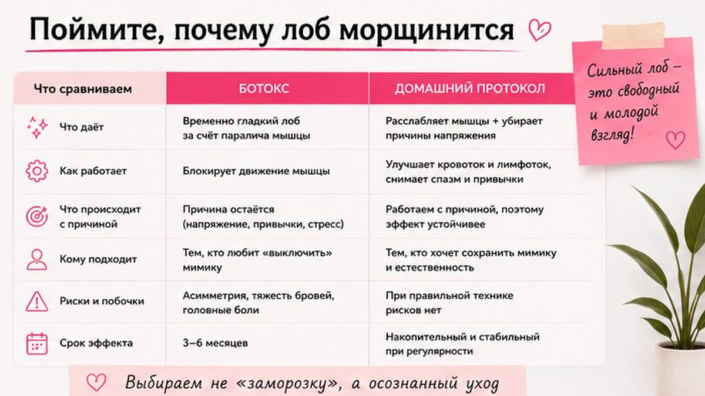
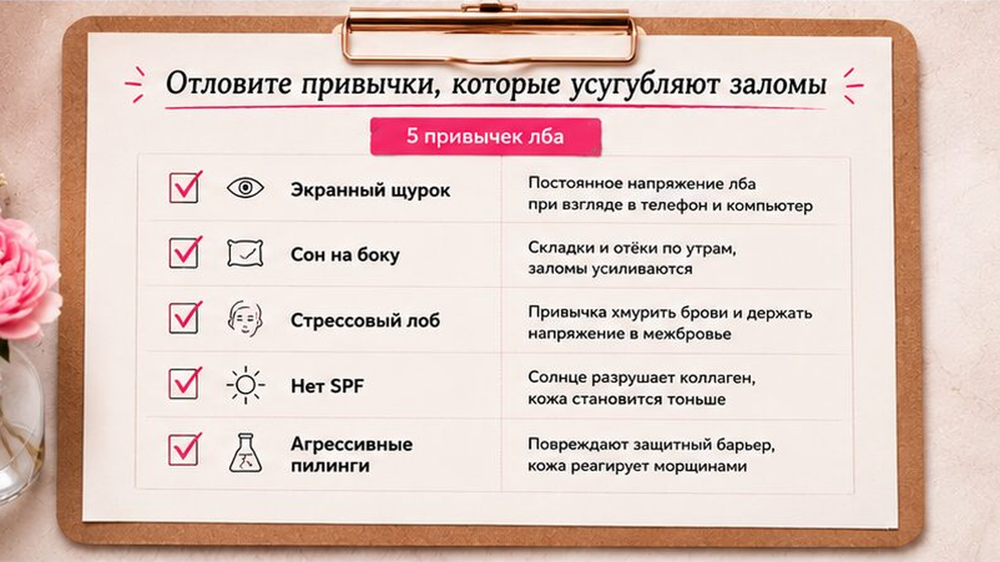
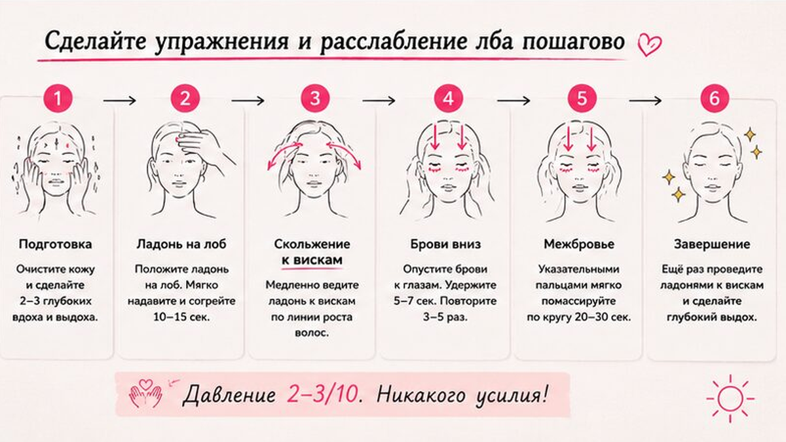

Морщины на лбу часто пугают так сильно, что хочется "заморозить" зону одним уколом. Ботокс действительно разглаживает лоб на несколько месяцев - но это не лечение причины, а временная пауза в работе мышцы. Если вы хотите морщины на лбу без ботокса, важнее другое: понять, почему лобная мышца перерабатывает, убрать привычки, которые мнёт кожу, и добавить мягкое расслабление лба дома - за 7-10 минут, без боли и без обещаний "минус десять лет".
Ботокс в лоб разглаживает заломы на 3-6 месяцев, но привычка хмуриться остаётся. Домашний протокол работает с причиной: расслабить лобную мышцу (frontalis), снизить дневное напряжение и защитить кожу SPF. Давление в упражнениях - 2-3 из 10. Первые изменения по ощущениям - обычно через 2-3 недели регулярности.
Я смотрю на лоб как на зону привычки, а не как на "дефект". Когда клиентка говорит "я уже не хмурюсь, но морщины есть" - почти всегда находим скрытое напряжение: щурится к экрану, спит на боку, держит брови чуть приподнятыми даже в покое. Ниже - как отличить временную маскировку от реальной работы с мимикой, какие привычки усиливают заломы и пошаговый протокол расслабления.

Лобная мышца - это длинный "платок" под кожей лба. Когда мы удивляемся, щурится к свету или привычно "держим" брови, мышца сокращается и собирает кожу в складки. С годами кожа медленнее расправляется - отсюда стойкие горизонтальные линии.
Ботокс вводится в точки, где мышца сильнее всего тянет кожу. Препарат блокирует сигнал нерва к мышце - лоб перестаёт активно морщиться, заломы разглаживаются. Но это временная маскировка: как только действие заканчивается, мимика возвращается, если привычка не изменилась.
Делайте: оценивайте ботокс как "скорую помощь" на событие или тяжёлый период, а не как единственную стратегию. Не делайте: ждать, что один укол "переучит" лицо навсегда - без работы с привычками заломы вернутся. Проверьте в зеркале: поднимаются ли брови, когда вы читаете с телефона - это скрытый триггер лба.
Домашний путь - другая логика: мы не отключаем мышцу, а учим её отдыхать. Это медленнее, чем укол, зато вы не зависите от календаря повторных процедур и сохраняете живую мимику.

Морщины на лбу редко появляются "просто от возраста". Чаще это набор мелких повторений каждый день. Если убрать хотя бы два триггера, домашний протокол начинает работать заметно быстрее.
Чеклист перед стартом:
Миниплан на неделю: правило 20-20-20 для глаз → сон на спине с мягкой фиксацией → вечером 60 секунд "распустить брови" перед сном → SPF каждое утро → пауза от кислот на лбу 3-4 дня.
Если утром на лбу остаются мелкие сеточки от сна, добавьте ночную схему из материала про тейпы на ночь для лба - это мягкий способ снизить сминание, пока вы переучиваете мимику.

Цель - не "накачать" лоб, а снять лишний тонус. Работайте на чистой коже с каплей лёгкого крема или масла. Все движения медленные, без боли и без силового нажима.
Частота: 5 раз в неделю, лучше вечером. Утром - только 30 секунд лёгкого поглаживания, без глубокой проработки перед SPF.
Если лицо в целом "каменное" к вечеру, перед протоколом сделайте короткое расслабление лица за 5 минут - так лоб откликается быстрее.
Кожа лба тоньше, чем кажется, и быстро реагирует на перебор активов. Задача ухода - поддержать барьер и не сушить зону, пока вы переучиваете мимику.
Делайте: мягкое умывание, SPF 30+ каждый день, увлажнение без спирта в первые недели протокола. Не делайте: скрабить лоб ежедневно, совмещать в один вечер ретинол + кислоты + жёсткий массаж. Избегайте зоны лба в день глубокого пилинга - кожа должна восстановиться.
| Ошибка | Что происходит | Как исправить |
|---|---|---|
| Сильный массаж лба | Покраснение, заломы визуально глубже | Давление 2-3/10, скольжение, не "втирать" |
| Нет SPF при активной мимике | Заломы закрепляются быстрее | SPF каждое утро, обновлять при долгом солнце |
| Ждать эффект за 2 дня | Разочарование, бросаете протокол | Минимум 21 день регулярности |
| Только укол, без привычек | Эффект уходит, заломы возвращаются | Параллельно работать с мимикой и сном |
| Тейп + агрессивные кислоты в один вечер | Раздражение лба | Разнести активы и тейп по разным дням |
Я не против инъекций как инструмента - я против иллюзии, что они заменяют работу с привычкой. Ботокс уместен, когда нужен быстрый визуальный результат к событию или когда гипертонус настолько силён, что домашние техники пока не дают входа.
Домашний протокол уместен, если вы готовы к 3-4 неделям регулярности и хотите сохранить естественную мимику. Многие мои клиентки совмещают: укол раз в полгода + ежедневное расслабление лба - тогда интервал между процедурами часто увеличивается.
Если параллельно беспокоят отёки и тяжесть взгляда, посмотрите материал про мешки под глазами и лимфодренаж височной зоны - зажатый висок часто тянет и лоб. Чтобы подобрать уход под ваш тип кожи, пройдите короткую диагностику.
Достоверность: рекомендации носят оздоровительно-косметический характер и не заменяют консультацию врача. Решение об инъекциях - только с лицензированным специалистом после очного осмотра.
Мелкие мимические заломы часто смягчаются за 3-6 недель регулярного расслабления лба и работы с привычками. Глубокие стойкие морщины полностью "стереть" дома нереалистично, но их можно сделать менее заметными и замедлить углубление.
Оптимально 5 раз в неделю по 7-10 минут вечером. Два дня отдыха нужны, чтобы кожа не раздражалась. Утром достаточно лёгкого поглаживания и SPF.
По ощущениям лоб "отпускает" часто уже на 10-14 день. Визуально мелкие заломы обычно мягче к 3-4 неделе при стабильных привычках сна и SPF.
Это вопрос для врача: у препарата есть показания, противопоказания и риски. В бытовом смысле главное - не путать безопасность процедуры у специалиста с идеей, что укол решает причину морщин навсегда.
Только очень мягко и после теста на небольшом участке. При выраженном куперозе или розацеа сначала согласуйте метод с дерматологом.
Тейпы снижают ночное сминание и помогают профилактике, но не блокируют мышцу как инъекция. Лучший эффект - в связке с дневным расслаблением лба.
Шкала 2-3 из 10: кожа двигается, но не белеет и не болит. Если появляется головная боль - вы сильно давите, уменьшите интенсивность.